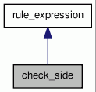

check_side Class Reference
side of descendant respect to ancestor (or viceversa) More...
#include <dep_rules.h>
Inheritance diagram for check_side:

Collaboration diagram for check_side:

Public Member Functions | |
| check_side (const std::string &, const std::string &) | |
| bool | check (dep_tree::iterator, dep_tree::iterator) const |
| Check wheter a rule_expression can be applied to the given pair of nodes. | |
Detailed Description
side of descendant respect to ancestor (or viceversa)
Constructor & Destructor Documentation
| check_side::check_side | ( | const std::string & | , | |
| const std::string & | ||||
| ) |
Member Function Documentation
| bool check_side::check | ( | dep_tree::iterator | ancestor, | |
| dep_tree::iterator | descendant | |||
| ) | const [virtual] |
Check wheter a rule_expression can be applied to the given pair of nodes.
Reimplemented from rule_expression.
References rule_expression::node, TRACE, and rule_expression::valueList.
The documentation for this class was generated from the following files: